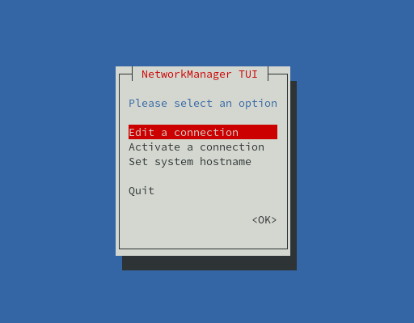

Networking #
Macaroni OS inherits all network configuration ways from Funtoo. In particular, every release could contain one or more ways and/or technologies.
Hereinafter, a table with the different technologies and the availability in the Macaroni releases.
| Technology | Release Phoenix | Release Terragon | Release Eagle |
|---|---|---|---|
| Network Manager | Yes | Yes | Yes |
| Core Network | Yes | Yes | No |
| SystemD Networkd | No | No | Yes |
In our ISOs, we use Network Manager that is which seems better integrated with Calamares Installer.
For Server ISO our suggestion is to disable Network Manager when the installation is done and to use the core network scripts.
1. Network Manager #
NetworkManager is the standard Linux network configuration tool suite that in the years is been integrated over different desktop environments. It’s the default service used by Gnome and could be configured in the different way.
If the service is active, normally, the default configuration automatically uses DHCP protocol on the enabled network interfaces.
From terminal could be used the nmtui tool and nmcli to configure the network.
The package that supplies this service is net-misc/networkmanager and could be
extended with extra plugins.
$> luet s networkmanager --table
| PACKAGE | VERSION | REPOSITORY |
|------------------------------------|------------------|-----------------|
| kde-frameworks-5/networkmanager-qt | 5.85.0+2 | macaroni-funtoo |
| net-misc/networkmanager | 1.26.0+3 | macaroni-funtoo |
| net-vpn/networkmanager-openconnect | 1.2.6.20200831+2 | macaroni-funtoo |
| net-vpn/networkmanager-vpnc | 1.2.6+3 | macaroni-funtoo |
$>
The Network Manager configurations are stored under the directory /etc/NetworkManager/ and could be a good idea to do a backup of this directory when there are a lot of profiles configured.
nmcli #
The nmcli tool is parte of the network-manager package and could be used
to check the status of the setup of the Network Manager from the terminal.
$> nmcli --help
Usage: nmcli [OPTIONS] OBJECT { COMMAND | help }
OPTIONS
-a, --ask ask for missing parameters
-c, --colors auto|yes|no whether to use colors in output
-e, --escape yes|no escape columns separators in values
-f, --fields <field,...>|all|common specify fields to output
-g, --get-values <field,...>|all|common shortcut for -m tabular -t -f
-h, --help print this help
-m, --mode tabular|multiline output mode
-o, --overview overview mode
-p, --pretty pretty output
-s, --show-secrets allow displaying passwords
-t, --terse terse output
-v, --version show program version
-w, --wait <seconds> set timeout waiting for finishing operations
OBJECT
g[eneral] NetworkManager's general status and operations
n[etworking] overall networking control
r[adio] NetworkManager radio switches
c[onnection] NetworkManager's connections
d[evice] devices managed by NetworkManager
a[gent] NetworkManager secret agent or polkit agent
m[onitor] monitor NetworkManager changes
To check the connectivity status:
$> nmcli g
STATE CONNECTIVITY WIFI-HW WIFI WWAN-HW WWAN
connected full enabled disabled enabled enabled
List the connections configured on Network Manager:
$> nmcli c
NAME UUID TYPE DEVICE
VLAN 50 441acd87-ce63-4af5-bde7-7ce4aec765fd vlan vlan50
UP-Empty c3b0c6d6-5a62-3e4f-9ec8-44526a3f5aba ethernet eth0
Or retrieve the list of the network interfaces availables:
$> nmcli d
DEVICE TYPE STATE CONNECTION
vlan50 vlan connected VLAN 50
eth0 ethernet connected UP-Empty
wlan0 wifi unavailable --
mottainai0 bridge unmanaged --
veth0e8d2a56 ethernet unmanaged --
veth0fda5989 ethernet unmanaged --
veth4d3fd438 ethernet unmanaged --
veth7df4c34c ethernet unmanaged --
vetha71fd414 ethernet unmanaged --
vethbb8d7925 ethernet unmanaged --
vethf25b2272 ethernet unmanaged --
vethfb55205d ethernet unmanaged --
lo loopback unmanaged --
Run man nmcli to a more complete description of all available
commands.
nmtui #
The nmtui tool is part of the network-manager package and supply
a terminal interface based on ncurses library to configure the connections.

Network Manager and LXD #
By default Network Manager automatically tries to configure and enable every new interface added to the system and this could be correct when LXD is used.
It’s possible to disable this behavior for specific interfaces with the
creation of the the file /etc/NetworkManager/NetworkManager.conf or
editing it if it’s already present and to add the keyfile plugin as
reported hereinafter:
[main]
plugins=keyfile
#[logging]
#domains=ALL:TRACE
[keyfile]
unmanaged-devices=interface-name:veth*,interface-name:mottainai0,interface-name:br-int0,interface-name:ovs*
In the example, the interfaces starting with veth or ovs and the interfaces
mottainai0 and br-int0 are ignored by NM.
2. Core Network #
Inherit from Funtoo for the OpenRC systems, so for both Phoenix and Terragon releases the corenetwork package contains the Funtoo scripts to use for configure the network interfaces on boot.
The concept about the interfaces configuration is that for every interface
it’s needed create under the directory /etc/init.d the link in the format
netif.<iface-name> to the netif.templ file with and then to create the
related file under the directory /etc/conf.d/ with the naming convention
netif.<iface-name>.
The corenetwork package supplies different templates to use different
technologies and/or for different targets. For example, the DHCP could be
managed with the tool dhcpd or with dhclient. Every specific template
as specific configuration options.
The supported templates are available under the directory /etc/netif.d
and in this moment are these:
# luet q files corenetwork | grep netif.d
etc/netif.d/bond
etc/netif.d/bridge
etc/netif.d/bridge-dhcpcd
etc/netif.d/bridge-openvswitch
etc/netif.d/dhclient
etc/netif.d/dhcpcd
etc/netif.d/hostapd
etc/netif.d/interface
etc/netif.d/interface-noip
etc/netif.d/ipv6-tunnel
etc/netif.d/macvlan
etc/netif.d/macvtap
etc/netif.d/pppd
etc/netif.d/tap
etc/netif.d/tunnel
etc/netif.d/wireguard
etc/netif.d/wpa_supplicant
Setup a DHCP interface using the dhcpd template #
These the steps to setup the interface eth0 with the DHCP.
root $> cd /etc/init.d
root $> ln -s netif.tmpl netif.eth0
root $> rc-update add netif.eth0 default
root $> echo template=dhcpcd > /etc/conf.d/netif.eth0
Setup an interface with a static IP #
To configure an interface with a static IP it’s used the interface
template that could be configured with this steps:
root $> cd /etc/init.d
root $> ln -s netif.tmpl netif.eth0
root $> rc-update add netif.eth0 default
and then editing the file /etc/conf.d/netif.eth0 with this content:
template="interface"
ipaddr="10.0.1.200/24"
gateway="10.0.1.1"
nameservers="1.1.1.1 8.8.8.8"
domain="mottainai.local"
A more completed documentation is available directly from the Funtoo wiki.
3. Systemd Networkd #
In the only Eagle release where it’s used Systemd could be used
the systemd-networkd service for the network configuration.
The configuration files are available under the directory
/etc/systemd/network with the extension .network.
For example to configure DHCP on interface eth0 it’s possible to
create the file /etc/systemd/network/default_dhcp.network with
the following content:
[Network]
DHCP=ipv4
[Match]
Name=eth0
[DHCP]
UseDomains=true
After the editing and/or creation of the files under /etc/systemd/network
to apply the configuration is needed following the commands:
$> systemctl daemon-reload
$> systemctl restart systemd-networkd
The complete description of all availables options is present on the Freedesktop Website.